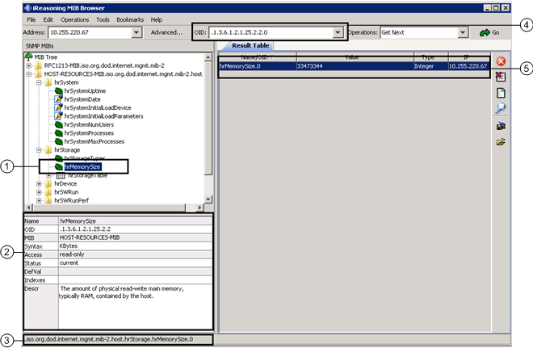
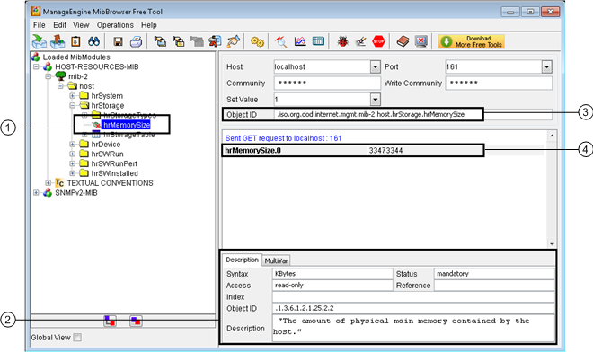

MIB Files and MIB Browsers for SNMP Devices
Management Information Base (MIB) Files
Manufacturers of SNMP-capable devices usually supply a Management Information Base (MIB) files describing the structure of the device management data. MIB files use a hierarchical namespace containing object identifiers (OID). Each OID identifies a property that can be read or written using SNMP.
You cannot directly import MIB files into Desigo CC. Instead, with the MIB browser you can identify the properties you want to monitor, and then configure the system accordingly.
Basically, the MIB browser is a tool helpful for reading the SNMP Object ID (OID) and Data Type information from the SNMP device.

As not all tools work the same way, it is not possible to provide generic instructions on how to retrieve data from MIB browsers. We cannot even say that a MIB browser is better than another as each can provide the required information but in different ways. We recommend the engineer to evaluate the information the software provides and handle such information correctly while using Desigo CC.
The following types of MIB browser software are indicated as examples of tools for browsing SNMP devices to retrieve data to handle in Desigo CC.
iReasoning MIB Browser

| Description |
1 | SNMP point selected in the SNMP device tree from which you want to read information. |
2 | Information about the point selected in the tree on the left. Pay special attention to the following parameters:
|
3 | Full SNMP point path in extended text format. Note that the full path ends with “.0” (dot zero) which indicates the exact object to read. NOTE: The path starts with a “.” (dot), but the full object ID already includes a “ |
4 | Object ID for the selected SNMP point. Also in this case, the OID ends with “.0” (dot zero) thus indicating the full Object ID to use for reading the SNMP point value. As you can see, using the iReasoning MIB browser it is possible to get the correct OID to use in Desigo CC by copying the numeric string provided in the OID field. NOTE: The OID starts with a “.” (dot) that you must remove so Desigo CC can correctly read the SNMP object. |
5 | The result of the command sent from the iReasoning MIB browser (in the above example, Get Next) displays in the Result Table on the right. This is only possible when the MIB browser communicates with the SNMP device thus reading real-time SNMP values. It may be useful for verifying the configuration and the values read from Desigo CC. As already mentioned, the command you sent from the iReasoning MIB browser, also retrieves real information of the SNMP object type (Type column). NOTE: The Name/OID (first column) resulting from the command displays the point name in text format (which is the same as the point selected in the MIB tree on the left) with “.0” (dot zero) that indicates the reading of the SNMP object value. |
ManageEngine MibBrowser Free Tool

| Description |
1 | SNMP point selected in the SNMP device tree from which you want to read information. |
2 | Description tab that contains information about the point selected in the tree on the left. Pay special attention to the following parameters:
|
3 | Full SNMP point path in extended text format. NOTE: The path starts with a “.” (dot), but does not end with a “0” (zero). |
4 | The result of the GET command sent from the ManageEngine MIB browser displays in this area. This is only possible when the MIB browser communicates with the SNMP device thus reading real-time SNMP values. It may be useful for verifying the configuration and the values read from Desigo CC. The SNMP object contains “.0” (dot zero). This is the only section of the ManageEngine MIB browser where the last digit to use for reading the whole SNMP OID appears. |